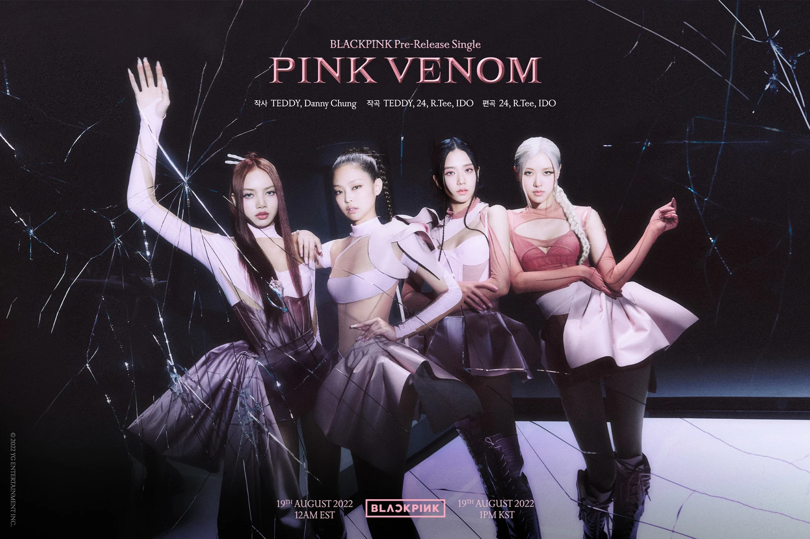

Blackpink (Korean: 블랙핑크; RR: Beullaekpingkeu, commonly stylized as BLACKPINK or BLɅϽKPIИK) is a South Korean girl group formed by YG Entertainment, consisting of members Jisoo, Jennie, Rosé, and Lisa. The group debuted in August 2016 with their single album Square One, which featured "Whistle" and "Boombayah", their first number-one entries on South Korea's Gaon Digital Chart and the US Billboard World Digital Song Sales chart, respectively. Blackpink is the most successful Korean girl group internationally and have often been dubbed the "biggest girl group in the world."[1] They are the highest-charting female Korean act on the Billboard Hot 100, peaking at number 13 with "Ice Cream" (2020), and on the Billboard 200, peaking at number one with Born Pink (2022), which is the best-selling album of all time by a Korean girl group and the first to sell more than two million copies.[2] They were the first girl group to top Billboard's Artist 100 and the first Korean girl group to enter and top Billboard's Emerging Artists chart.[3] Blackpink was also the first female Korean act to receive a certification from the Recording Industry Association of America (RIAA) with their single "Ddu-Du Ddu-Du" (2018), whose music video was the first by a Korean group to surpass one billion views and is currently the most-viewed by a Korean group on YouTube.[4] Their 2018 song "Kiss and Make Up", a collaboration with Dua Lipa, was the first by a Korean group to receive a certification from the British Phonographic Industry (BPI)[5] and a platinum certification from the Australian Recording Industry Association (ARIA).[6] The group's debut studio album, The Album, (2020) was the first album by a Korean girl group to sell more than one million copies and was the highest-charting female Korean album on the Billboard 200 at number two, both records that were surpassed by their follow-up album Born Pink (2022).[7] Born Pink was the first album by a K-pop girl group in history to reach number-one on the Billboard 200 as well as the UK Albums Chart.[8] The album's lead single "Pink Venom" (2022) was also the first song by a Korean group to top the ARIA Singles Chart and the first song by a female Korean act to top the Billboard Global 200.[9]
 click hear| name | age |
|---|---|
| lisa | 22 | jinny | 23 |
| rose |